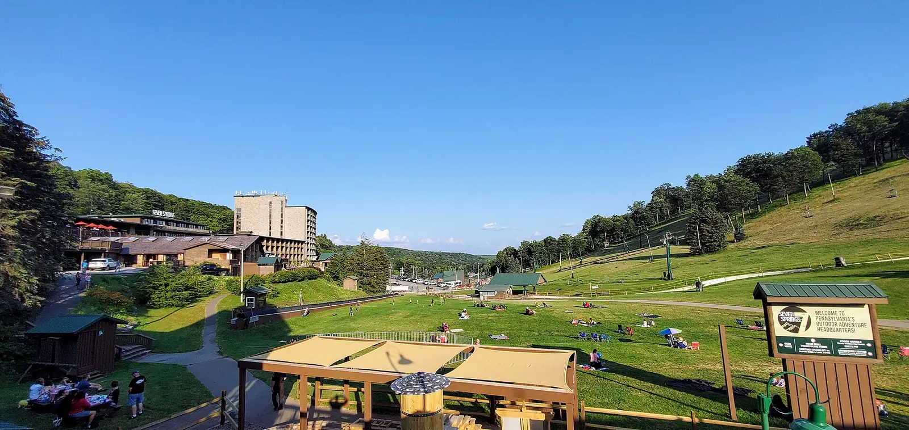

Seven Springs, Pennsylvania · Ski conditions
Seven Springs Conditions and Webcams Today
Seven Springs' webcams, lift status and kid facts: lessons from age 3, a tube park with a Magic Carpet, indoor backups. It sits about an hour southeast of Pittsburgh, off Pennsylvania Turnpike exits 91 or 110.
Researched with AI (Miles Rowan) · sources linked and dated · How we check
Seven Springs' own status
No lifts open on Nov 24Seven Springs' lift and terrain status page showed 0 of 14 lifts open, and its hours page says opening day isn't announced yet (read Nov 24).
Our webcam read
No cam read from us yet. Cam reads show here only when a recent one has passed a separate automated accuracy check.

Plan the day with kids
- Opening day: Not announced yet; Seven Springs says slope hours will be posted soon. Check its lift and terrain status before you drive.
- Lessons: Tiny Trailblazers (ages 3 to 6): full day 9am to 2pm, or 9 to 11am or noon to 2pm. Mountain Explorers (7 to 15): full day 10am to 3pm, or 10am to noon or 1 to 3pm. Lunch comes only with full-day groups; kids must be potty trained.
- Bring: A lift ticket or pass for every child in a lesson, and a helmet (required under 18 in lessons; rentals can include one). Rentals are extra; add them at a discount when you book a group lesson.
- Check-in: Child groups meet at the Ski and Ride School Desk (plaza level, Skier Services Building): 60 minutes early with rentals, 30 with your own gear. Arrive late and there may be no lesson that day; photo ID is needed at pick-up.
- Tubing: The bubly Tube Park has several lanes and a Magic Carpet lift, no experience needed. Ages, heights, hours and prices are not on the pages we read.
- Childcare: The pages we read don't mention childcare; ask Seven Springs before you plan around it.
Parking price on Seven Springs' pages, read Nov 17:
- Blitzen Lot preferred parking, Fridays to Sundays and peak days: $30 a day
From Seven Springs' Getting Here page: Blitzen spaces are limited, first come first served.
Lift tickets and lessons: Seven Springs' info pages we read post no day lift ticket or lesson prices (it points to buying online ahead as the best way to save), so we can't sum a family-of-4 day; check live. See Seven Springs winter trip planner.
From Seven Springs ski and ride lessons, Seven Springs winter trip planner, Seven Springs non-skier's guide, Seven Springs lift and terrain status (read Nov 24), Seven Springs lessons: know before you go, Seven Springs getting here and Seven Springs hours of operation (read Nov 24), read Nov 17 unless dated.
Getting there by car
- Car: take the Pennsylvania Turnpike to exit 91 (Donegal) or 110 (Somerset); from Somerset and points east, stay on County Line Road. Seven Springs says to avoid Triple Creek Road and Pritts Distillery Road (no winter maintenance). (It posts no drive time from New York City.)
- Parking: after the Main Lodge lot fills, the East, North and Northeast lots are free, with free shuttles to the base, main lodge and tubing park. Seven Springs' lessons know-before-you-go page suggests arriving an hour early on weekdays and two on weekends and holidays, as lots fill early.
- Address: 777 Waterwheel Drive, Seven Springs, PA.
Closer hills for a day trip: skiing near New York City with kids.
If the snow is thin
- Indoor options at the resort: bowling, 18-hole indoor mini golf, an arcade and an indoor pool (access rules not stated on the page we read).
- Lessons: cancel more than 48 hours ahead for a full refund; later, a 50% fee. No refund for weather, wind or snow levels; if Seven Springs cancels, it reschedules or refunds.
From Seven Springs non-skier's guide and Seven Springs lessons: know before you go, read Nov 17.
Cam by cam
The 4 Seven Springs cam views our reader uses, in our own descriptive words (see Seven Springs' own cam page, as listed in our cam feed Nov 17): Tubing park and base, North Pole lift, Beginner slope conveyors, Summit lift top. Once our reads start, each cam's last read time shows here.
How we read the cams: a program looks at Seven Springs' public webcam pictures and notes only what a picture can show: fresh snow, snow cover, snowmaking, moving lifts, how busy the base looks, visibility and the snow stake. Each read shows its time; after 90 minutes it is marked older, after 6 hours it is hidden. We never say whether terrain is safe, icy, groomed or open; Seven Springs' own report decides that. We don't show the cam pictures or count people.
Sources: Seven Springs mountain cams · Seven Springs hours of operation (read Nov 24) · Seven Springs lessons: know before you go · Seven Springs getting here · Seven Springs ski and ride lessons · Seven Springs winter trip planner · Seven Springs non-skier's guide · Seven Springs lift and terrain status (read Nov 24). Read Nov 17 unless dated. We haven't skied Seven Springs.